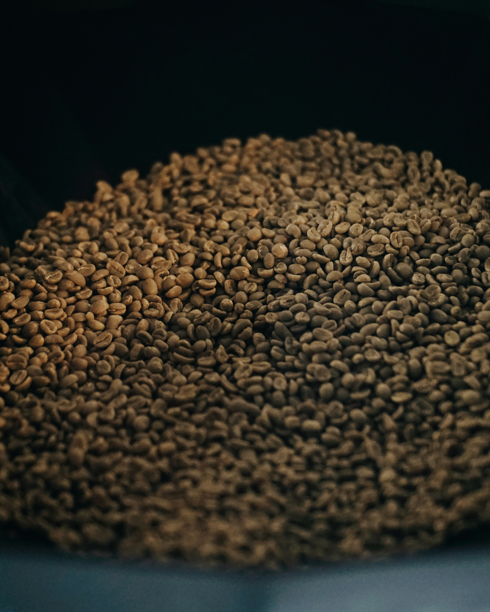
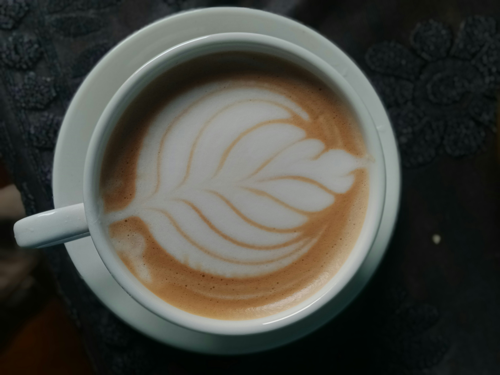
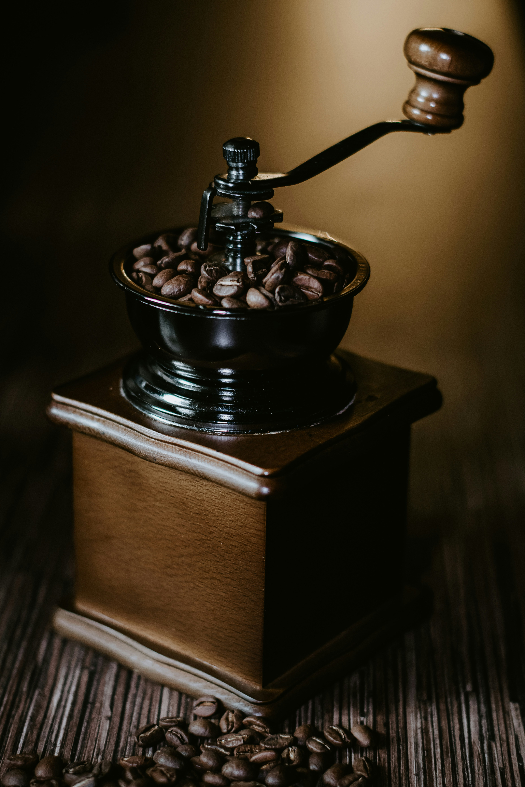

Galeria de Café
Uma coleção visual celebrando a beleza e diversidade do mundo do café

Grãos Torrados

Latte Art

Cafeteria Artesanal

Plantação de Café

Arte do Barista

Métodos de Preparo
Café Especial

Moedor Artesanal
📹 Vídeo: Como fazer Latte Art
Tutorial completo de como criar desenhos no leite vaporizado